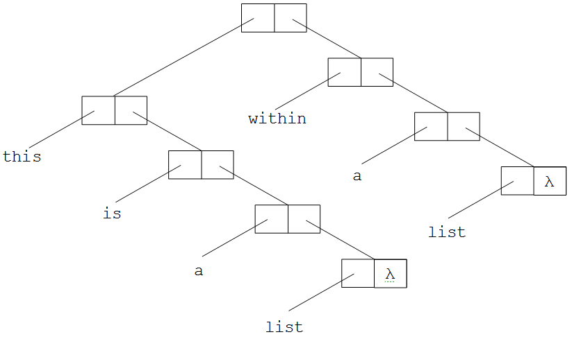
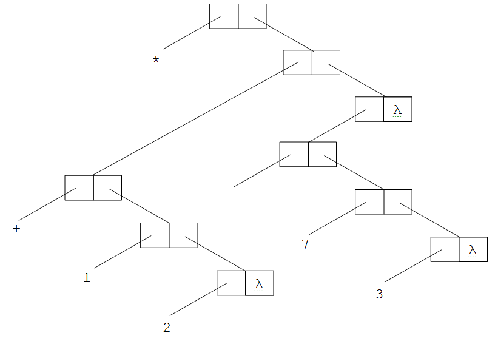
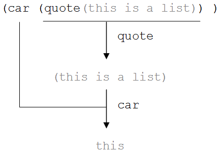
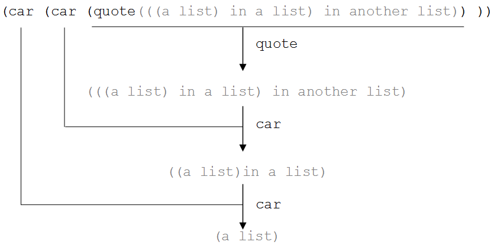
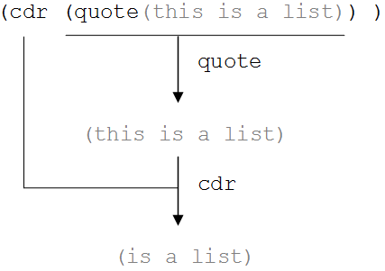
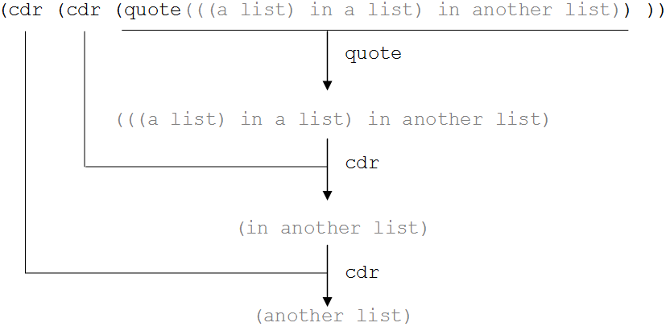
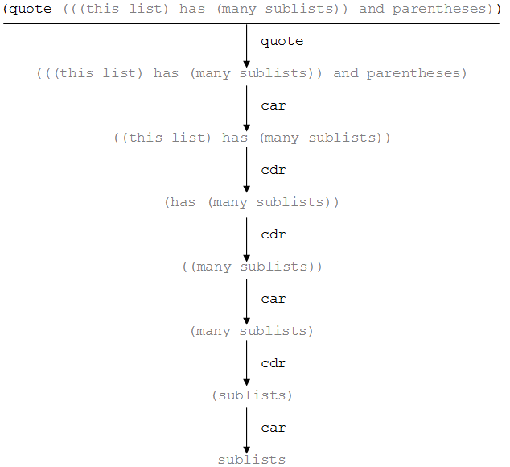
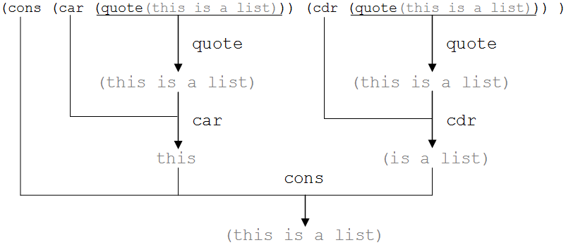
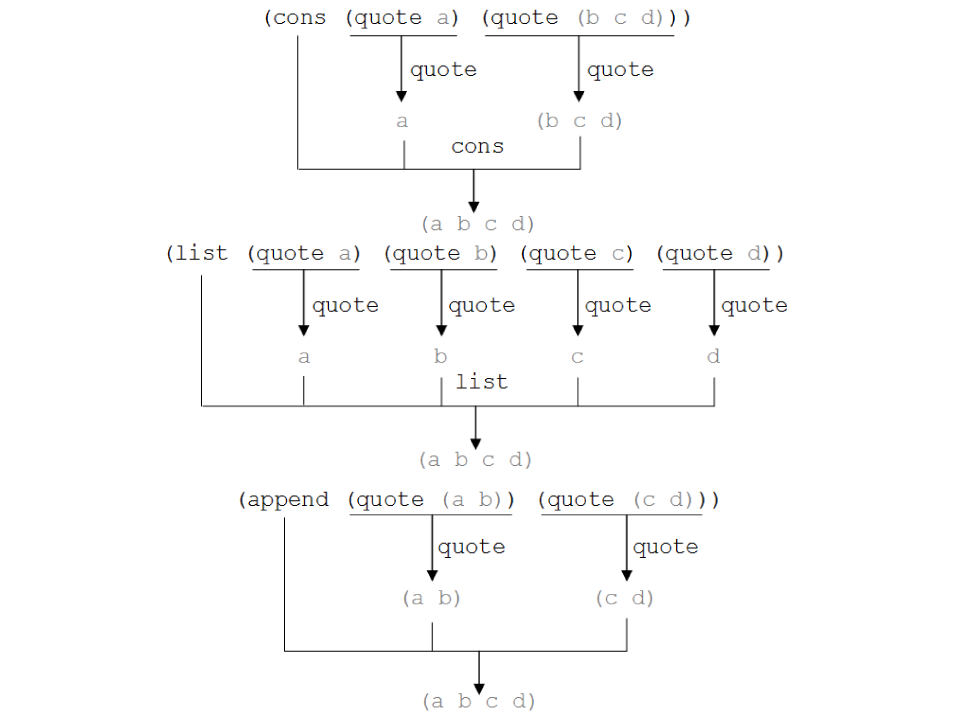
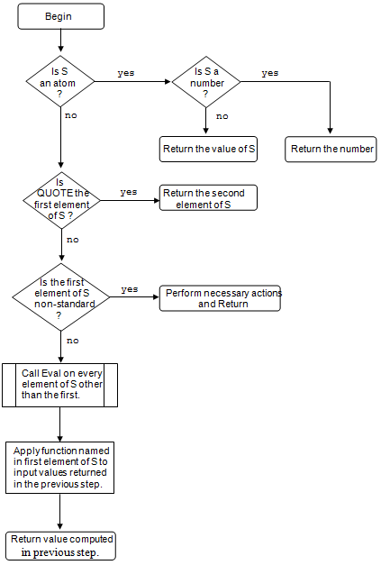

Whereas the imperative programming paradigm views a program as a list of commands to be executed, the functional programming paradigm views a program as a sequence of function calls that transform one or more inputs into the desired output.
In this section we will concentrate on Lisp, the best known and most commonly used functional language. Lisp is a LISt Processing language. First developed in 1958 by John McCarthy, Lisp is the second oldest programming language still in widespread use.[1] Though the language has changed somewhat over the years, our presentation concentrates on some of the core features of Lisp that have remained unchanged for many years.
Lisp is a functional recursive language. This means that programs are collections of functions, where the individual functions tend to use recursion, rather than iteration, to implement repetition. Another difference between Lisp and the traditional imperative languages is that Lisp makes no distinction between programs structures and data structures – both are lists.
One of the most striking differences between Lisp and traditional imperative languages is that the use of assignment operations – where a value is computed and then “stored” in a variable – is strongly discouraged. In fact, Lisp doesn’t even include variable declaration statements, such a “Var I : integer;” that are a standard feature of most imperative languages. While the idea of programming without using assignments statements may sound incredible, once you “wrap your head around” the functional way of approaching problems, you will find it possible create quite compact programs capable of complex behaviors.
If all of this sounds a bit intimidating, don’t be put off, Lisp is actually quite a simple (albeit powerful) little language that is very easy to learn.
Let’s begin our study of Lisp by defining what a list is. A Lisp list is a sequence of three things: (1) an open parenthesis, (2) zero or more atoms or lists, and (3) a close parenthesis. This, definition of “list” begs the question, “What is an atom?”. A Lisp atom is an indivisible object. There are two kinds of atoms in Lisp: numeric atoms and symbolic atoms. Numeric atoms are simply numbers, both integer and real, like “27”or “3.14159”. Symbolic atoms, also called symbols, consist of a string of one or more characters that do not include spaces. For example: “green”, “name”, “+”, and “age” are valid symbols. Various dialects of Lisp may impose additional constraints on naming symbols, such as preventing symbolic atoms from beginning with a number or forbidding certain non-alphabetic characters.
The following:
(this is a list of 7 atoms)
is a valid Lisp list that consists of seven atoms enclosed within parentheses. The first element of the list is the symbolic atom “this”, the second element of the list is the symbolic atom “is”, and the third element is the symbol “a”. The sixth element of the list is the numeric atom “7”.
The following are not valid Lisp lists:
- I
- do not like green eggs and ham
- I will not eat them in the rain
- ( I will not eat them on a train
- I do not like them Sam I am.)
The first example, “I”, is an atom, not a list. The remaining four examples are neither atoms nor lists. The second, third, and fourth examples are missing either or both of the required parentheses. The fifth example contains the punctuation mark “.” which is neither a valid symbol, nor a valid number.
Here is another valid list:
(((a list) within a list) within another list)
This list is different from our first valid list in that some of its elements are lists. In fact, the first element of this list is the list “((a list) within a list)”. The second element is the symbolic atom “within”, the third element is the symbolic atom “another”, and the final element is the symbolic atom “list”.
The first element of this list, “((a list) within a list)”, can be further decomposed. Its first element is itself the list “(a list)”. Its second element is the symbol “within”, its third element is the symbol “a”, and its last element is the atom “list”.
As can be seen in , Lisp lists are represented internally using a tree-like structure of nodes. Each node has two pointers, a left pointer and a right pointer. The left pointer points to a list element (which can be either an atom or another list) and the right pointer points to the remainder of the list. The right pointer of the very last node of every list contains a special value, known as nil. Nil, sometimes indicated by the Greek letter λ, is used to indicate both the end of a list and also an “empty list”. In addition to the Greek letter lambda and the word “nil”, the empty list can also be written as an open parenthesis followed immediately by a close parenthesis,“()”. Nil is the only construct in Lisp that is considered to be both a list and an atom.

Internal representation of the list (this is a list)
Internal representation of ((this is a list) within a list)
illustrates the internal representation of another list. This list includes a sublist as its first element. Lisp lists may contain an arbitrary number of sublists arranged in any order and “nested” to an arbitrary depth. The only rule is that for every open parenthesis there must be a matching close parenthesis. This ability of lists to contain arbitrary numbers of sublists is one of the features of Lisp that give the language such flexibility.
Now that we have an understanding of how Lisp represents data, we can turn our attention to how it represents programs, or procedures. Here is a procedure for adding the numbers “5” and “3”, which when run returns the value “8”.
(+ 5 3)
A Lisp procedure is a list that specifies a function to be computed. The first element of every procedure list is an atom that specifies the name of the function to be executed. This function can be either a built-in function, like addition, in the above example; or a programmer-defined function. The other elements of the procedure list specify the arguments, or inputs, to the procedure. In the above example, these inputs are the numeric atoms (i.e., numbers) “5” and “3”. In general, the arguments to a procedure may be either lists or atoms. Because the name of the function is always the first thing in the procedure list, Lisp procedures are said to be expressed in prefix notation, rather than in the more standard infix notation, where the operator appears between the operands (e.g., 5 + 3).
Internal representation of (* (+ 1 2) (- 7 3))
Here is another example of a Lisp procedure that uses built-in functions:
(* (+ 1 2) (- 7 3))
In order to emphasize the fact that this procedure is a valid Lisp list, its internal representation is illustrated in .
As is generally the case with parenthesized mathematical expressions, expressions in Lisp are evaluated starting with the inner most set of parentheses, working outward; with parenthesized expressions at the same “level” evaluated from left to right. In the above example, the multiplication operator is to be applied to the results of an addition operation (“1” plus “2”) and a subtraction operation (“7” minus “3”). The expression is evaluated in the following way. First, the sub-expression (+ 1 2) is evaluated giving“3” for an overall expression of (* 3 (-7 3)). Next, the second sub-expression (- 7 3) is evaluated, giving “4” and an overall expression of (* 3 4). Finally, the multiplication operation is performed on (* 3 4) giving the final result, “12”.
As you may have surmised by now, Lisp contains all of the basic mathematical operators that you would expect, such as addition, subtraction, multiplication, and division; as well as various ‘advanced’ operators. The expression evaluation pattern seen above, where the operation that is specified first is actually applied last is typical of Lisp – and, as we will see shortly, not just for procedures involving mathematical operators, but for all Lisp procedures.
At this point you may be asking yourself how Lisp knows whether a list represents data or program, since a list can contain either. The answer is that all lists are assumed to be procedures, unless explicit measures are taken to inform Lisp that a list represents data.
The most common way of informing Lisp that a list is to be treated as data is to “quote” the list. Quote is a built-in procedure that accepts an atom or list as input and returns the input as the output. For example, (quote (this is a list)) will return (this is a list). Likewise (quote (a list (containing a list))) evaluates to the list: (a list (containing a list)). Finally, (quote a) will return the atom “a”. In general, quote will return the second element in its list, regardless of whether that element is a list or an atom.
If the quote procedure seems a bit silly, remember that its primary function is to demark where executable code ends and data begins. Without quote, Lisp would attempt to evaluate lists such as (this is a list) by applying the “this” procedure to the values associated with the atoms “is”, “a”, and “list” – even if no such procedure had been defined.
Since quote is used frequently in Lisp programs, most versions of the language include one of more “shorthand notations” for expressing this important function. One shorthand involves replacing the word quote and the outer set of parentheses with the symbol ', thus the expressions '(a quoted list)and (quote (a quoted list)) both evaluate to (a quoted list). Another common shorthand for quote involves enclosing the atom or list to be quoted in double quote marks. Thus, the expression "(a quoted list)" is equivalent to (quote (a quoted list)) in many dialects of Lisp.
Although, as we have seen, it is possible to do math in Lisp, the primary focus of the language is list processing. Thus, a rather large number of primitives exist in the language for tearing down, building up, and otherwise manipulating lists. In the remainder of this section we will look several of the most common Lisp primitives.
One of the most basic Lisp operators is “car”. The car procedure accepts a list as input and returns the first element of that list as output. So, for example:
(car (quote(this is a list)) )
returns the atom “this” which is the first element of the list.
An illustration of the car operator
illustrates the action of the car operator on a simple list of atoms. Notice that this example uses the quote operator to tell Lisp where the data for car begins. If we had failed to quote the data and instead written an expression such as:
(car (this is a list))
an error would be generated since Lisp doesn’t know of a procedure called “this”.
The car operator can be applied to lists of arbitrary complexity, but it must always be given a list, never an atom. If the first element of a list is itself a list, car will return that list. For example:
(car (quote((a list) containing another list)) )
evaluates to the list (a list) since that is the first element in the data list. Likewise,
(car (quote(((a list) in a list) in another list)) )
evaluates to ((a list) in a list).
Thus, the car of a list can be either an atom or a list. If the result of a car is a list, then the car of that list may also be computed. So,
(car (car (quote(((a list) in a list) in another list)) ))
produces (a list). In order to help you clearly see why this is the case, illustrates the way this result is computed. Since the result of this expression is itself a list, the car operator could be applied to that result to produce the atom “a”. The form of that expression would be
(car (car (car (quote(((a list) in a list) in another list)) )))
An illustration of nested car operations
An interesting historical note about car is that the name of this command comes from the phrase “Contents of Address Register” and has to do with how this function was implemented on Lisp’s original 1950’s hardware platform. A better name for car might have been “first” or “head” since it always returns the first element of a list, which is sometimes called the “head” of the list. Though the reference to the address register is antiquated, the name “car” has stuck over the years, and no one seems eager to change it.
Before moving on, we should note how every procedure we have looked at so far returns a result. This is a standard feature of Lisp; every procedure will return a result – either an atom or a list. In most Lisp systems, if a procedure is called or invoked from the command line console, the result of that procedure is automatically printed to the display screen.
The next list operator we will look at is “cdr”, usually pronounced “cŭ dér”. The cdr procedure accepts a list as input and returns as output a list of everything in the original list except the first element. In other words, cdr returns everything in a list except its car. So,
(cdr (quote(this is a list)) )
returns the list “(is a list)”. Unlike car, cdr always returns a list, never an atom.
The basic operation of cdr is illustrated in . In order to make it easy to compare car and cdr, this example employs the same data as was used for the illustration of car in .
An illustration of the cdr operator
The cdr operation may be applied to lists of arbitrary complexity, but it must always be given a list, never an atom. The first element of the data list is always omitted from the output of cdr, even if that first element is a list. Thus, the expression
(cdr (quote((a list) within a list)) )
will return (within a list)– everything in the original list save the first element (a list).
Since cdr operations always return a list, it is always possible to perform a cdr on the results of another cdr operation. In other words, cdr operations may be nested. If the input list to cdr is either an empty list or a list that contains only a single item, cdr returns the empty list, nil, as its result. Thus,
- (cdr (quote (list)))
- (cdr () )
- (cdr nil)
each return nil, which is the same as the empty list ().
An example of nested cdr operations is presented in . This example uses the same data as , so that the operation of nested cdrs can be compared to the operation of nested cars. As you can see from the example, the first cdr generates a list with all of the items in the input list except the first one. The second cdr generates a list with all of the items in the input list except the first two. This pattern could be continued until no more items remained in the list. For example, the list (list) would be returned by the expression
(cdr (cdr (cdr (quote(((a list) in a list) in another list)) ))
An illustration of nested cdr operations
As with car, the name cdr is anachronistic. It stands for “Contents of Data Register”. A better name for this operation might be “tail”, since the contents of a list minus its head are often referred to as the tail of the list.
Both car and cdr are very efficient operations in Lisp. If we compare , , and , we can see that the action of car can be implemented by returning the value pointed to by the left pointer of the first node of a list’s internal data structure. Similarly, cdr can be implemented by returning the node list pointed to by the right pointer of the first node in a list’s internal data structure. If that pointer is empty (contains nil) then nil is returned.
It is possible, and in fact common, to create Lisp expressions that apply both car and cdr operations to different portions of an input list. By combining these two functions we can retrieve any desired element from any list. For example, to retrieve the third element of an input list, we need to apply cdr two times, followed by car once. In other words, to get the third item, we discard the first two items in the list, and then select the first item from those remaining. Because Lisp expressions are evaluated from the “inside out”, the third element of the list (I will not eat them in the rain), “not” could be retrieved in the following way:
(car (cdr (cdr (quote(I will not eat them in the rain)) )))
(car (cdr (car (cdr (cdr (car (quote (((this list) has (many sublists)) and parentheses)) ))) )))
An illustration of nested car and cdr operations
It is also possible to use car and cdr operations to “reach down” and pull an element from any sublist of a list. illustrates retrieving the last atom, of the last sublist, of the first element, of a list. You should study this example carefully. Once you fully understand it, you will have mastered using car and cdr. As you work your way through this example, notice how we use cdr to move through a list an element at a time, and car to move down into a sublist.
Sometimes as we are processing a list, we end up in a situation were we have a one element list, where that element is itself a list, and we wish to delve into the underlying list. In other words, a situation with a list like ((many sublists)) where it is first necessary to car this list to get to the underlying list (many sublists) before you can process that list. I point this out, since it is quite easy to overlook this required step.
An illustration of the relationship between car, cdr, and cons
A third list operator is “cons”. Whereas, car and cdr are used to decompose lists, cons is Lisp’s primary list constructor that is used to build up lists. The cons operator accepts two inputs, the first can be either an atom or list, but the second must be a list. Cons returns a new list, the car of which is its first argument, the cdr of which is its second argument. For example,
(cons (quote this) (quote(is a list)) )
returns the list (this is a list). Note that the car of (this is a list) is the atom this, which was the first input to cons. The cdr of (this is a list) is the list (is a list), which was the second input to cons.
As mentioned above, while the second input to cons must be a list, the first input can be either a list or an atom. If the first input is a list, then that list will become the first element of the returned list. So, the expression
(cons (quote(this)) (quote(list contains a sublist)) )
produces the list ((this) list contains a sublist); a list in which the first element is a list containing a single atomic element.
It is interesting to note that if you take the cons of the car and cdr of the same list, you will end up with a copy of the original list. This relationship between cons, car, and cdr is illustrated in .
The Lisp list composition operators: cons, list, and append
In addition to cons, there are a number of other Lisp operators that are used to create lists. Two of the most common operators are list and append. List is a function that takes any number of inputs, each of which may be an atom or a list, and returns a new list, the elements of which were the inputs to the function. Append accepts any number of lists as input (no atoms are allowed) and returns a new list composed of the input lists with the outermost level of parentheses removed from each of them.
You may be asking yourself which of the three list composition operators, cons, list, or append you should use when you wish to build a list. Well this all depends, of course, on what kind of list you are trying to build and what kinds of inputs you have, but here is a good way of keeping the functionality of each of these three operators straight. Assume you want to build a list with no sublists – a simple list of atoms. In order to do so, use cons if you have an atom and a list of atoms and want to insert the new atom at the head of the existing list. Use list if you have a bunch of atoms and want to build a list out of them. Finally, use append if you already have two or more lists of atoms and want to join them together into a single list. illustrates three methods of constructing the list (a b c d), using cons, list, and append. Notice that each of these operators requires different inputs in order to construct identical output lists.
At the beginning of this section I made the claim that Lisp was a simple, albeit powerful, little language. In fact, the core of the Lisp “engine” can be diagramed in less than a page. It appears in .
Lisp is an interpreted language. Unlike most procedural languages which are translated, or complied, to machine language (or to an intermediate byte code as is the case with Java), Lisp instructions are evaluated by the Lisp engine as they are encountered during program execution. While program written in interpreted languages tend to run slower than compiled programs, interpreted languages can make up for this deficiency with increased flexibility.
Due to the fact that Lisp is interpreted and uses the same data structures, lists, for both programs and data, the language is extremely flexible. In fact, Lisp is so flexible that it is possible to create a Lisp program that writes other programs and then execute those programs. This idea, that Lisp is self-extensible, attracted a lot of attention in the early days of the language.
Now lets turn our attention to the Lisp engine, or interpreter. The name of the Lisp interpreter is “Eval”. Eval is a simple recursive procedure that evaluates lisp expressions.
Eval works in the following way.
First, Eval checks to see if it has been given an atom. If so, it then checks to see whether that atom is a number. If the input is a numeric atom, Eval simply returns the number and exits. If the input was an atom, but was not numeric, the value (if any) bound to that variable is returned.[2] Although I have not yet shown you how to bind a value to a symbol, know that it is possible. We will look into this matter in the next section.
If the input given to Eval was not an atom, then it must be a list. Eval next determines whether the first element of its input list is quote. If so, Eval returns the second element of its input list and exits.
The Lisp interpreter -- Eval
Next, Eval checks to see whether the first element of the input list requires special handling of some sort. For example, it may be the defun operator (described in the next section) that is used to define new functions and is thus not a “normal” function. If special handling is required, Eval performs the necessary actions and returns.
Assuming the procedure named in the first element of Eval’s input list is a standard Lisp function, Eval then calls itself on each of the elements of the input list other than the first. This is a recursive call and is what gives Lisp its “inside out” feeling.
Once all of the inputs, other than the first, have been properly evaluated, the final task of Eval is to call the function named in the first element of the input list on the values already returned for each of its inputs.
Eval then returns the computed value computed by this function to the procedure that called it. If that function is the top-level “command interpreter”, the return result will be printed on the display device.
And that’s it. That is all the basic Lisp engine does. summarizes the contents of the preceding paragraphs in program “flowchart” form.
Exercises
-
Identify each of the following as an atom, list, or neither an atom nor list:
R2D2(attack of the clones)(C3PO)1138((((()()))))
-
Using , , and as a guide, show the internal representation of the following lists:
2.1 (please state the nature of the medical emergency)
2.2 ((please state)the nature(of the medical)emergency)
2.3 (please(state the nature of the(medical)emergency))
-
Evaluate the following Lisp expressions. Indicate any potential errors.
3.1 (+ 2 (* 5 3))
3.2 (/ (- 5 3) (+ 1 1))
3.3 (5 + 3)
3.4 ( * + 3 5 2)
-
Evaluate the following Lisp expressions. Indicate any potential errors.
4.1 (quote (brave))
4.2 (quote (new world))
4.3 (quote Huxley)
-
Evaluate the following Lisp expressions. Indicate any potential errors.
5.1 (car(quote(a hobbits tale)))
5.2 (car(car(quote((a hobbits tale) by Bilbo Baggins))))
5.3 (car(quote(the shire)))
5.4 (car(the shire))
5.5 (car(car(car(quote(((the)shire))))))
5.6 (car(quote Frodo))
-
Evaluate the following Lisp expression. Indicate any potential errors.
- (car (quote (car (quote (((a list) in a list) in another list)))))
-
Evaluate the following Lisp expressions. Indicate any potential errors.
7.1 (cdr (quote (Doctor Morbius)))
7.2 (cdr (cdr (cdr (quote (Welcome to Altair 4)))))
7.3 (cdr (quote Robbie))
7.4 (cdr (cdr (quote (monsters (from the) Id))))
-
Evaluate the following Lisp expressions. Indicate any potential errors.
8.1 (car (cdr (quote (I am a doctor not a))))
8.2 (car (cdr (cdr (quote (I am a doctor not a)))))
8.3 (car (cdr (cdr (cdr (quote(I am a doctor not a))))))
8.4 (car (cdr (car (quote((most illogical)captain)))))
8.5 (cdr (car (quote ((hailing frequencies open)))))
8.6 (cdr (car (quote (hailing frequencies open))))
-
Evaluate the following Lisp expressions. Indicate any potential errors.
9.1 (cons (quote open) (quote (the pod bay doors Hal)))
9.2 (cons (quote(open)) (quote(the pod bay doors Hal)))
9.3 (cons (quote(open the pod))(quote((bay doors) Hal)))
-
Evaluate the following Lisp expressions. Indicate any potential errors.
10.1 (list (quote just) (quote a) (quote moment))
10.2 (list (quote(just a)) (quote(moment)))
10.3 (list (quote(just a)) (quote moment))
-
Evaluate the following Lisp expressions. Indicate any potential errors.
11.1 (append (quote just) (quote a) (quote moment))
11.2 (append (quote (just a)) (quote (moment)))
11.3 (append (quote (just a)) (quote moment))
-
Using the illustration of , trace through the actions of the Lisp interpreter when evaluating the expression:
- (+ 3 (- 12 10))
Footnotes
[1] The oldest high-level language still in widespread use today is FORTRAN, though like LISP modern dialects of FORTRAN contain many features absent from earlier versions.
[2] Although I have not yet shown you how to bind a value to a symbol, know that it is possible. We will look into ways of doing this in the next section.